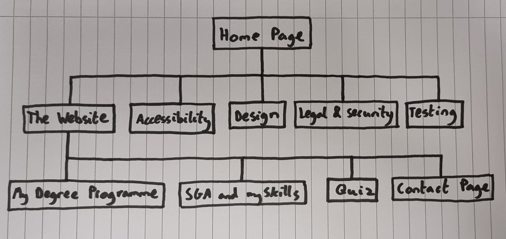
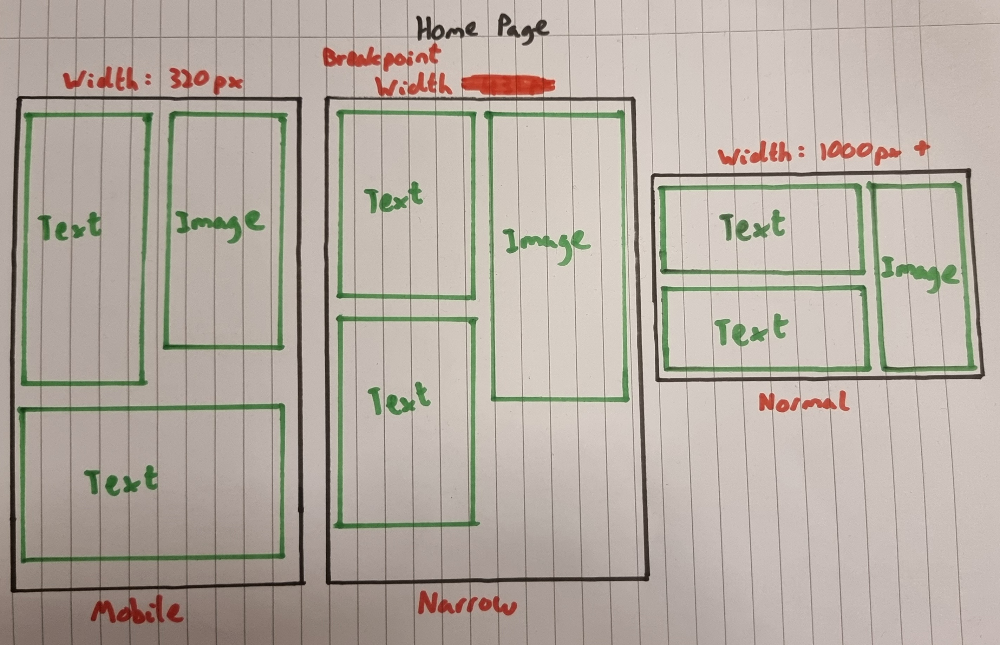
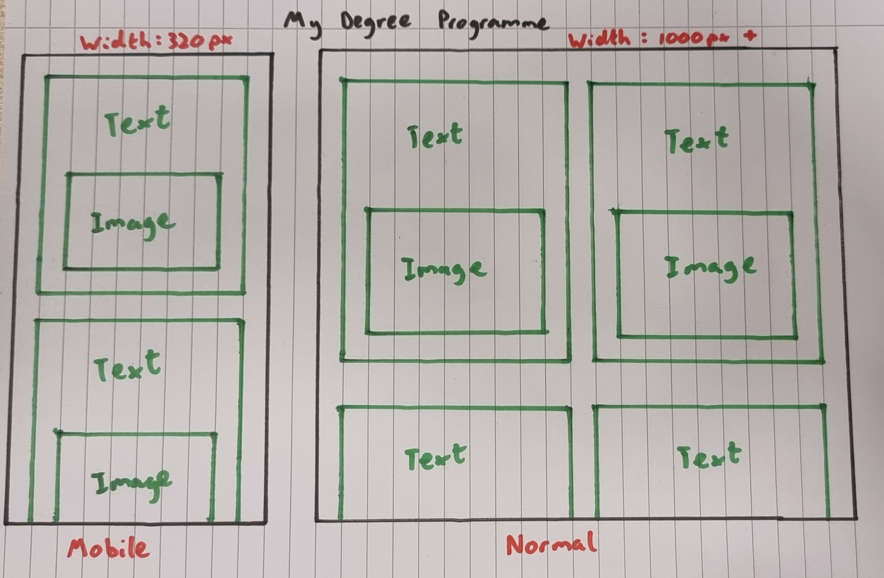

Design 
Mobile-First Responsive Web Design
When designing my website, I firstly limited the width of each page to 320px, since it is the minimum width a website should be compatible with, whilst also representing a mobile screen size. I created every page using this width. Once the website was complete at 320px, I started on the home page and expanded it out to a full desktop screen width. I then introduced media queries, in order to appropiately layout the page on the new size. Finally, I added more media queries for the intermission to make the website suitable for screen sizes ranging between a mobile and a computer monitor. Finally, I repeated this process for all the other pages.
Introduction
In my website design I haven't completely committed to a cheerful or a serious website, I have encorporated aspects of both. The goal with my design was to have a website that looks professional and tidy, whilst avoiding the simple use of a white background. I encorporated a beige-like background to add some colour and ultimately make the website more cheerful.
Site Map
Design Mock-up
Home Page
I will implement tweakpoints at 6 different widths. I feel this will be enough to give the page a smooth transition from mobile size to desktop size. I will tweak the font size of the two paragraphs and headers, and also alter the percentage of the screen that they stretch across. This will allow them to fit the screen nicely with the image. The main breakpoint will be altering the width of the second paragraph, as shown in my design mockup. I also will add 2 more breakpoints at widths of 600px and 1000px, where I'll make the paragraphs fill a higher percentage of the screen.
My Degree Programme
I will include a breakpoint at 1000px which will change the layout to having two module descriptions next to eachother, as shown on the image. I believe this design will be better suited to wider screens than simply each box below another and stretched across the full length of the screen.
Quiz Page
I will not implement any breakpoints in this page, however, I will need to implement many tweakpoints in order to keep the answers aligned with the images.
Other Pages
For the rest of the pages I will have the text and header in a text box and just tweak the font sizes of the paragraphs and headers as the screen size increases.
Menu System
I chose to implement the "Do Nothing" approach. This approach makes the website easier to understand and navigate. A horizontal bar below the header is a more than effective way of navigating my website since there wasn't a need for much depth in my design, the navigation bar remains constant on all pages thus avoiding and confusion with the user. For more infomation on responsive navigation patterns, and where I got the "Do Nothing" approach, follow this link: Responsive Navigation Patterns.